[1]:
import matplotlib.pyplot as plt
import straph as sg
import networkx as nx
[2]:
plt.rcParams["figure.figsize"] = (12,9)
Graph Theory Properties¶
Stable DAG Parallel Framework¶
As explained precedently, a stable connected component,  , can be
reduced to a static graph
, can be
reduced to a static graph  , spanning
, spanning  . In practice,
interactions occurring inside a stable connected component can be considered as static
links.
. In practice,
interactions occurring inside a stable connected component can be considered as static
links.
The set of stable connected components is denoted by  .
.
We say that a cluster 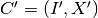 follows another cluster
if and only if: - 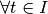, 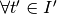,  - 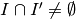 - 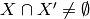
- 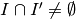 - 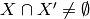
We define the stable directed acyclic graph of a stream graph as the graph
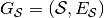, with node set
and in which 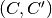 is in 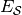 of follows
 .
.
[3]:
path_directory = "examples/"
S = sg.read_stream_graph(path_nodes=path_directory + "example_nodes.sg",
path_links=path_directory + "example_links.sg")
G = S.stable_dag()
_ = G.plot()
Using this object, the stable DAG of a stream graph, to compute stream graph properties based on graph theory.
Let us consider a graph property, for example a node’s core number, which is an integer. We
will focus on its equivalent in a stream graph: a time series. Consider 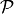
a node (or edge) property in graph theory, given a graph 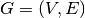, is the following application
(or  ). We recall that the induced static
graph of
). We recall that the induced static
graph of  at time
at time  is denoted by
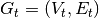. The equivalent of such a property in a stream graph is the time series 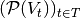 (or 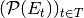).
is denoted by
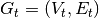. The equivalent of such a property in a stream graph is the time series 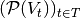 (or 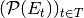).
Our framework consists in applying an efficient graph algorithm to each stable connected component, represented by an edge list or by an adjacency list/matrix. Each result will be associated to a time period corresponding to the time window of the component. Then, results of adjacent stable connected components may need to be merged together. It can be done by browsing the DAG and aggregated results along the time axis. This framework is highly parallelisable, as graph algorithms can be computed on each stable connected component independently.
Straph can be hooked with other graph library in order to efficiently compute graph
properties on a partition of a stream graph nodes. For example we can use any algorithm
implemented in networkx,
such as betweenness centrality. We can obtained either a time series for each node,
corresponding to its betweenness through time, either a dictionary assigning a betweenness
value to a cluster:
[4]:
prop_nx = S.graph_property(nx.algorithms.centrality.betweenness_centrality, format = 'signal',
datetime=False)
ax = prop_nx[1].plot(linewidth = 3,title = "Betweenness of node B over time",
ylabel = "Betweenness",xlabel = "t")
[5]:
prop_nx = S.graph_property(nx.algorithms.centrality.betweenness_centrality, format = 'cluster')
_ = S.plot(clusters = prop_nx)